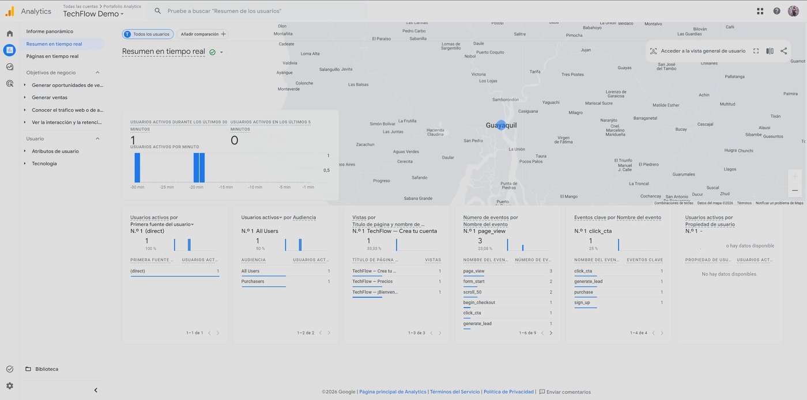
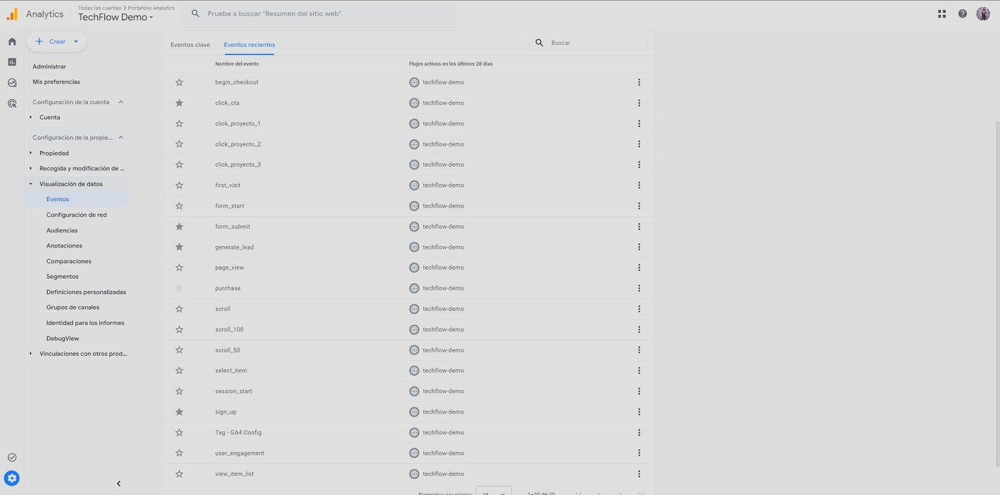
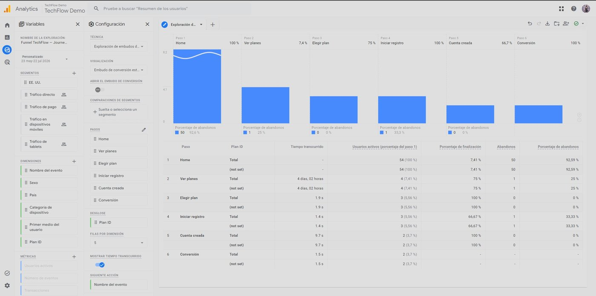

Evidencia de la propiedad GA4 conectada vía GTM: eventos ecommerce del journey completo, conversiones marcadas como eventos clave y el funnel de adquisición de 6 pasos construido en Explorations.
El informe en tiempo real muestra el journey de TechFlow
enviando datos a GA4: page_view, scroll_50,
begin_checkout y generate_lead entre los eventos,
y click_cta, generate_lead, purchase
y sign_up registrados como eventos clave (conversiones).

Catálogo de eventos de la propiedad
(Administrar → Visualización de datos → Eventos), con los legacy y los
nuevos de ecommerce recibidos. Marcados como eventos clave con estrella:
click_cta, form_submit, generate_lead,
sign_up y purchase.

Exploración de embudo en GA4:
Home → Ver planes → Elegir plan → Iniciar registro → Cuenta creada →
Conversión. Embudo cerrado con tiempo transcurrido entre pasos y desglose
por la dimensión personalizada Plan ID, que revela el abandono
real en cada etapa del journey.
